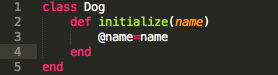
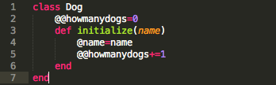

Ruby Variables
Local variables
Local variables are perhaps the most fundamental of ruby. They begin with an _ or a lower-case letter, and they store data locally. If you declare a variable inside a def or a class, for example (except in some cases explained below), the scope of that variable is limited to where it is declared.
Instance variables
Instance variables are a really useful component of classes. They are easily spotted, with a @ in front of the name (like @foo), and are specific to instances of an object. A simple example of this would be in a "Dog" class, like below.
Here, each Dog object will have its own particular @name, and the @name will be assigned to whatever name the dog is given when initialized. A second dog created will not accesss the @name from the first, because they are stored distinctly, unlike...
Class variables
Class variables are not specific to an instance to a class but to the class itself. In this case, the Dog class intends to keep track of how many dogs are created. Since it doesn't really make sense for each dog instance to have its own variable for this data, it is stored in a class variable. If you didn't notice, class variables have two @@s, like @@howmanydogs.
Global variables
Global variables can be set with a $ before the name, such as $foo. Once defined global variables will be accessible from anywhere. Overuse of global variables can cause a debugging nightmare if the same global variable name is used in two completely different parts of a large program, so they are best used sparingly. There are some built-in highly useful global variables, such as "$0", which holds the name of the ruby script file. A full list can be found here .